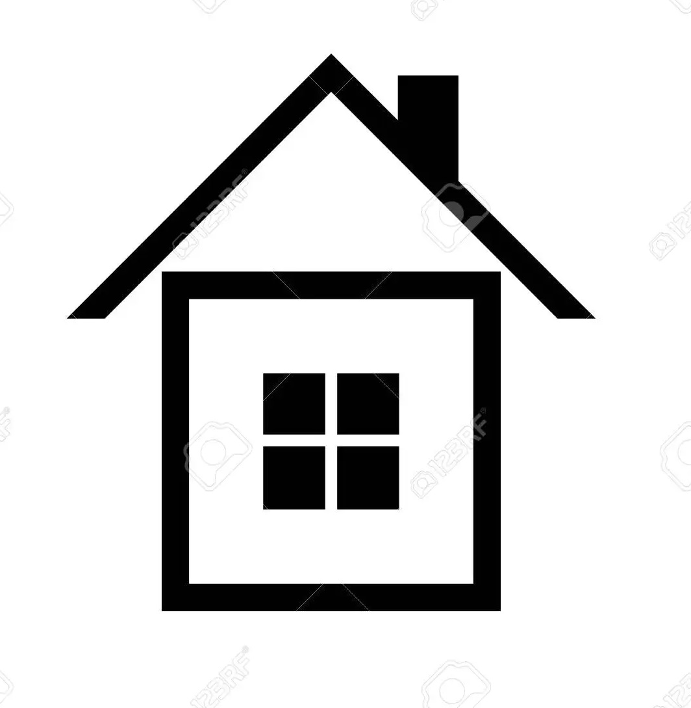
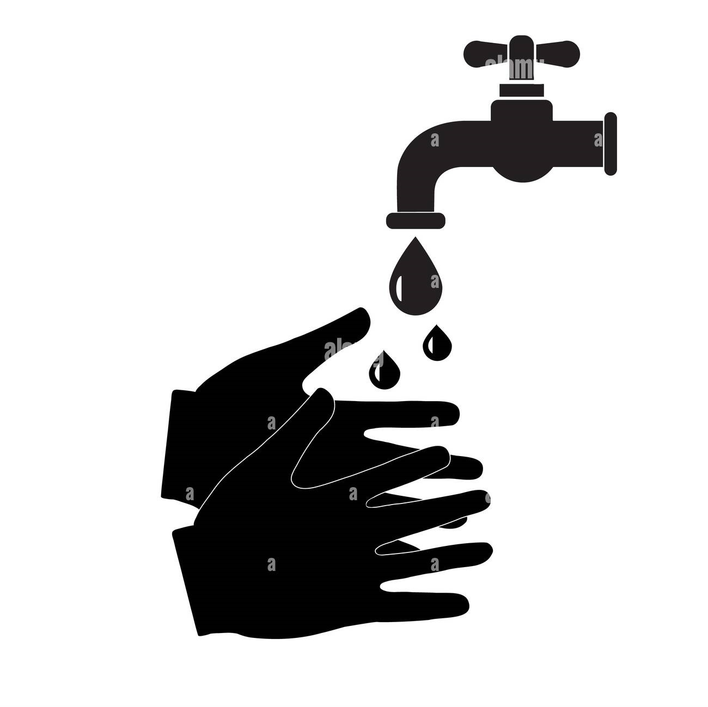
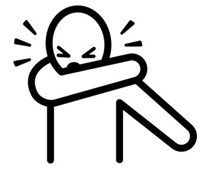
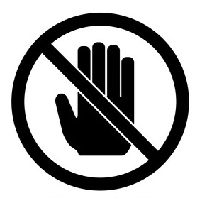
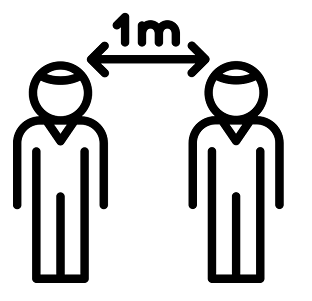
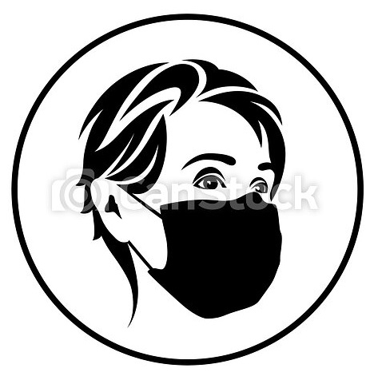
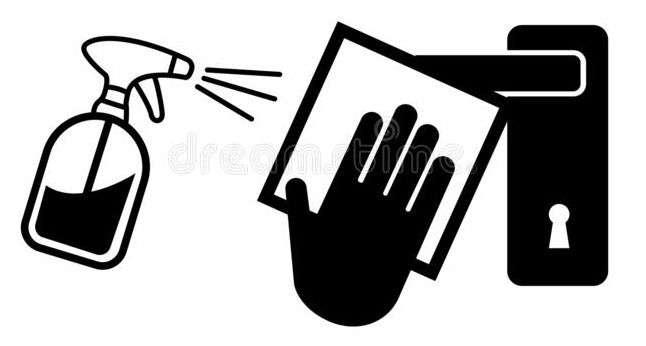

Comment nous protéger et protéger les autres/
Protégez-vous et protégez les autres en vous tenant informé et en prenant les précautions appropriées. Suivez les conseils des autorités sanitaires locales.
| 01 |  | 02 |  | 03 |  |
| Restez à la maison et isolez-vous si vous vous sentez mal, même avec des symptômes légers. | Lavez-vous les mains régulièrement avec du savon et de l'eau pendant 40 secondes ou avec une solution hydroalcoolique pour les mains. | Couvrez votre nez et votre bouche avec un mouchoir jetable ou éternuez et toussez dans votre coude fléchi. | |||
| 04 |  | 05 |  | 06 | |
| Évitez de toucher vos yeux, votre nez et votre bouche. | Maintenez une distanciation physique d’au moins 1 mètre des autres. | Restez à l’écart de la foule et évitez les espaces couverts mal ventilés. | 07 | 08 |  | 09 |  |
| Utilisez un masque de tissu lorsque la distanciation physique d'au moins 1 mètre n'est pas possible. | Portez un masque médical/chirurgical si vous pensez être à haut risque (âge, antécédents médicaux). | Nettoyez et désinfectez régulièrement les surfaces fréquemment touchées. |
Vérifiez auprès de votre autorité sanitaire locale pour obtenir les conseils les plus pertinents pour votre région.